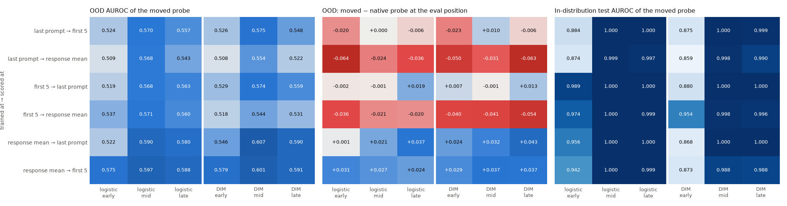
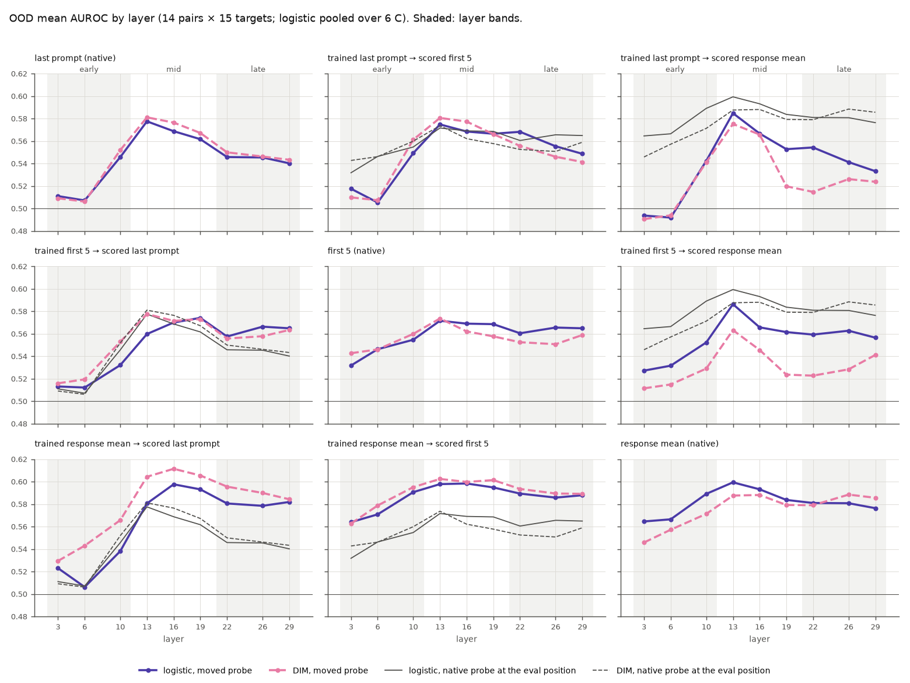
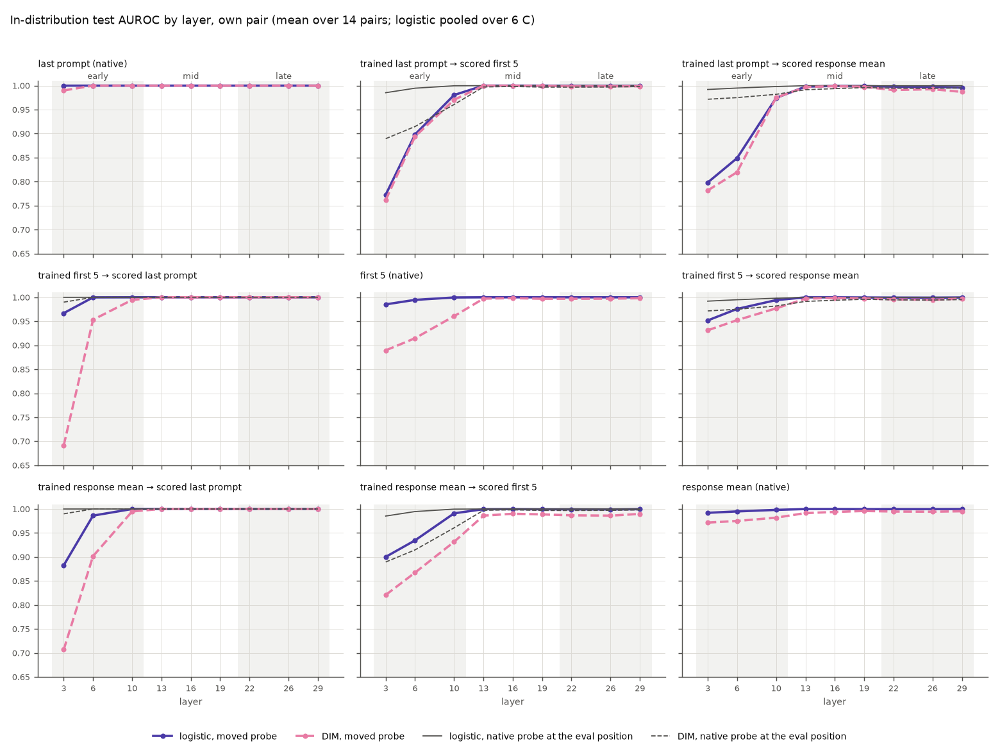
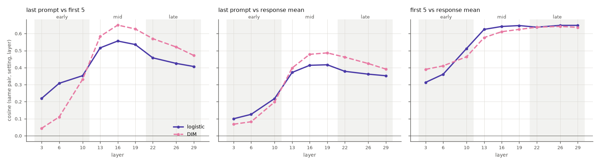

<title>Position Transfer Directions</title>
<link rel="preconnect" href="https://fonts.googleapis.com">
<link rel="preconnect" href="https://fonts.gstatic.com" crossorigin>
<link rel="stylesheet" href="https://fonts.googleapis.com/css2?family=IBM+Plex+Sans+Condensed:wght@500;600&family=IBM+Plex+Sans:ital,wght@0,400;0,500;0,600;1,400&family=IBM+Plex+Mono:wght@400;500&display=swap">
<style>
/* Layout: single reading column (~70ch) for prose; figures break out to a wider track; findings are numbered because the review cites them by number. Shares tokens with the other Step 1 reviews. */
:root {
  --bg: #f7f8fa;
  --surface: #ffffff;
  --ink: #14181f;
  --ink-2: #4a5160;
  --rule: #dde1e8;
  --accent: #104281;      /* the colormap's blue pole: AUROC near 1 */
  --anti: #b23434;        /* the colormap's red pole: AUROC near 0 */
  --chip: #e9eef6;
  --font-display: "IBM Plex Sans Condensed", "Arial Narrow", system-ui, sans-serif;
  --font-body: "IBM Plex Sans", system-ui, -apple-system, "Segoe UI", sans-serif;
  --font-data: "IBM Plex Mono", ui-monospace, "Cascadia Mono", Consolas, monospace;
}
@media (prefers-color-scheme: dark) {
  :root:not([data-theme="light"]) {
    --bg: #12151a; --surface: #1b1f26; --ink: #e8ebf0; --ink-2: #a9b0bd; --rule: #2d333d;
    --accent: #7fb0ec; --anti: #ef7a7a; --chip: #232a35; color-scheme: dark;
  }
}
:root[data-theme="dark"] {
  --bg: #12151a; --surface: #1b1f26; --ink: #e8ebf0; --ink-2: #a9b0bd; --rule: #2d333d;
  --accent: #7fb0ec; --anti: #ef7a7a; --chip: #232a35; color-scheme: dark;
}
* { box-sizing: border-box; }
body { background: var(--bg); color: var(--ink); font: 400 16px/1.6 var(--font-body); padding-inline: 16px; padding-block: 40px 72px; }
.page { max-width: 1180px; margin: 0 auto; display: grid; gap: 40px; }
.col { max-width: 70ch; min-width: 0; }
h1, h2, h3 { font-family: var(--font-display); text-wrap: balance; line-height: 1.15; margin: 0; }
h1 { font-size: clamp(2rem, 4.5vw, 2.9rem); font-weight: 600; letter-spacing: -0.01em; }
h2 { font-size: 1.55rem; font-weight: 600; padding-top: 18px; border-top: 1px solid var(--rule); }
h3 { font-size: 1.15rem; font-weight: 600; }
p, ul, ol { margin: 0; }
section { display: grid; gap: 16px; }
.eyebrow { font: 500 0.78rem/1.4 var(--font-data); letter-spacing: 0.08em; text-transform: uppercase; color: var(--ink-2); }
.lede { font-size: 1.12rem; color: var(--ink-2); }
.meta { display: flex; flex-wrap: wrap; gap: 8px; }
.meta span { font: 400 0.8rem/1.3 var(--font-data); background: var(--chip); padding: 5px 9px; border-radius: 4px; }
code, .num { font-family: var(--font-data); font-size: 0.9em; font-variant-numeric: tabular-nums; }
.num { white-space: nowrap; }
.hi { color: var(--accent); font-weight: 500; }
.lo { color: var(--anti); font-weight: 500; }
ul, ol { padding-left: 1.3em; display: grid; gap: 8px; }
.findings { list-style: none; padding: 0; counter-reset: f; gap: 28px; }
.findings > li { counter-increment: f; display: grid; grid-template-columns: 2.4rem minmax(0, 1fr); gap: 4px 12px; }
.findings > li::before { content: counter(f); grid-row: 1 / span 3; font: 600 1.5rem/1.1 var(--font-display); color: var(--accent); }
.findings > li > * { grid-column: 2; }
.findings h3 { margin-bottom: 2px; }
.findings p + p { margin-top: 8px; }
figure { margin: 0; display: grid; gap: 10px; min-width: 0; }
figure .frame { background: #ffffff; border: 1px solid var(--rule); border-radius: 6px; padding: 10px; overflow-x: auto; }
figure img { display: block; width: 100%; height: auto; min-width: 640px; }
figcaption { font-size: 0.9rem; color: var(--ink-2); max-width: 90ch; }
figcaption b { color: var(--ink); font-weight: 600; }
.grid3 { display: grid; grid-template-columns: repeat(auto-fit, minmax(300px, 1fr)); gap: 20px; }
.grid3 img { min-width: 0; }
.tablewrap { overflow-x: auto; border: 1px solid var(--rule); border-radius: 6px; background: var(--surface); }
table { border-collapse: collapse; width: 100%; font-size: 0.92rem; }
th, td { text-align: left; vertical-align: top; padding: 10px 14px; border-bottom: 1px solid var(--rule); }
tr:last-child td { border-bottom: 0; }
th { font: 600 0.78rem/1.3 var(--font-data); letter-spacing: 0.05em; text-transform: uppercase; color: var(--ink-2); background: var(--chip); }
td:first-child { font-weight: 600; white-space: nowrap; }
td.why { color: var(--ink-2); }
pre { margin: 0; font: 400 0.82rem/1.55 var(--font-data); background: var(--surface); border: 1px solid var(--rule); border-radius: 6px; padding: 14px 16px; overflow-x: auto; }
a { color: var(--accent); }
a:focus-visible { outline: 2px solid var(--accent); outline-offset: 2px; }
.answer { background: var(--surface); border: 1px solid var(--rule); border-radius: 6px; padding: 18px 20px; display: grid; gap: 10px; max-width: 78ch; }
.answer h2 { border: 0; padding: 0; font-size: 1.2rem; }
td.t { color: var(--ink-2); font-weight: 400; }
td.num, th.num { text-align: right; }
.swatch { display: inline-block; width: 10px; height: 10px; border-radius: 2px; margin-right: 6px; vertical-align: baseline; }
tr.band td { font: 600 0.78rem/1.3 var(--font-data); letter-spacing: 0.05em; text-transform: uppercase; color: var(--ink-2); background: var(--chip); }
th[colspan] { text-align: center; }
</style>

<main class="page">
  <header class="col" style="display:grid; gap:14px;">
    <div class="eyebrow">SycoScope v2 · Step 1 analysis · 30 Sep 2026</div>
    <h1>Position Transfer Directions</h1>
    <p class="lede">A companion to <a href="https://claude.ai/artifact/T2bFyKzbSR8Rx7tCYEq6To">Last-Prompt Probes Across Positions</a>. That page covers probes moved out of the last prompt token. This one covers all six directions between the last prompt token, the first 5 response tokens and the response mean, split by early, mid and late layers and by probe method.</p>
    <p><b>Read with:</b> <a href="https://claude.ai/artifact/VUiePfsRgRAqN3kCWqbNuA">Transfer on Strong Probes</a>. The averages on this page are dominated by near-chance probes. For probes that score AUROC ≥ 0.70 at home, moving them loses 0.06–0.12 AUROC in every direction except last prompt → first 5.</p>
    <div class="meta">
      <span>Llama-3.1-8B-Instruct</span><span>synthetic_tefo_C_sweep</span><span>6 directions × 9 layers × 2 methods</span><span>same 127,008 AUROCs as the companion page</span>
    </div>
  </header>

  <section class="answer">
    <h2>Short answer</h2>
    <ul>
      <li><b>Which way a probe moves matters more than which positions are involved.</b> Probes trained on the response mean transfer outward well. Out of distribution, they beat the native probes at the first 5 tokens and, from mid layers on, at the last prompt token. Probes moved <i>into</i> the response mean always do worse than probes trained there.</li>
      <li><b>Early layers break in-distribution transfer, and the damage is one-sided.</b> At layer 3, probes moved out of the last prompt token keep only <span class="num">0.76–0.80</span> AUROC, while logistic probes moved into it keep <span class="num">0.88–0.97</span>. From layer 13 up, every logistic direction scores <span class="num">0.996</span> or higher.</li>
      <li><b>DIM is more position-bound than logistic.</b> DIM gains most when moved from the response mean to the last prompt token (<span class="num">0.607</span> in mid layers, the highest band-level OOD value in the grid). It loses most when moved into the response mean. In the early band it transfers worse than logistic in distribution in every direction.</li>
    </ul>
  </section>

  <section>
    <h2 class="col">Findings</h2>
    <ol class="findings col">
      <li>
        <h3>Response-mean probes carry over to the other positions; nothing carries over into the response mean</h3>
        <p>Out of distribution, response-mean probes scored on the first 5 tokens beat the native first-5 probes in every band and for both methods, by <span class="num">+0.024</span> to <span class="num">+0.037</span>, winning 58–61% of matched comparisons. Scored on the last prompt token, they beat the native last-prompt probes in mid and late layers: by <span class="num">+0.021</span> and <span class="num">+0.037</span> for logistic, and <span class="num">+0.032</span> and <span class="num">+0.043</span> for DIM, winning 63–68%.</p>
        <p>The reverse fails. Every probe moved onto the response mean scores below the native response-mean probe in every band: by <span class="num">−0.020</span> to <span class="num">−0.064</span>, winning only 27–39% of comparisons. Between the last prompt token and the first 5 tokens, transfer is roughly symmetric, and in mid layers it is within <span class="num">0.01</span> of native.</p>
        <p>The OOD responses have no system prompt. So a direction learned from responses is readable, weakly, at the last prompt token before the model responds. That bears on RQ4, but the pooled AUROC is only about 0.6.</p>
      </li>
      <li>
        <h3>Early layers: the last prompt token is the hard one to leave</h3>
        <p>In distribution at layer 3, logistic probes keep a mean AUROC of <span class="num">0.773</span> (last prompt → first 5) and <span class="num">0.798</span> (last prompt → response mean). Moved the other way they keep <span class="num">0.967</span> (first 5 → last prompt) and <span class="num">0.883</span> (response mean → last prompt). By layer 6, logistic probes moved into the last prompt token are at <span class="num">0.986–1.000</span>, while those moved out are still at <span class="num">0.85–0.90</span>.</p>
        <p>First 5 ↔ response mean is the easiest pair early on (logistic: <span class="num">0.90–0.95</span> at layer 3). It is also the most aligned: the cosine between the two probes is <span class="num">0.31–0.39</span> at layer 3, against <span class="num">0.04–0.22</span> for pairs involving the last prompt token (figure 4).</p>
        <p>Layer 10 already behaves like the mid layers in distribution (<span class="num">0.97–1.00</span> for logistic). The early-band averages below include it, so figure 3 is the place to see layers 3 and 6 on their own.</p>
        <p>Out of distribution, early layers are near chance for every probe except the response-mean probes, which stay at <span class="num">0.52–0.58</span> wherever they are scored. The rank agreement between a moved probe and the same probe at home is lowest early (Spearman <span class="num">0.22–0.49</span>, against <span class="num">0.46–0.79</span> in mid and late layers). So early-layer probes are not just weaker when moved; their ranking changes too.</p>
      </li>
      <li>
        <h3>DIM is more position-bound than logistic</h3>
        <p>In distribution, DIM transfers worse than logistic in every direction in the early band. The gap is largest when moving into the last prompt token: at layer 3, first 5 → last prompt is <span class="num">0.691</span> for DIM against <span class="num">0.967</span> for logistic, and response mean → last prompt is <span class="num">0.707</span> against <span class="num">0.883</span>. DIM response mean → first 5 never reaches 1: it stays at <span class="num">0.986–0.990</span> from layer 13, with single probes as low as <span class="num">0.85</span>. Native DIM probes are also weaker early (first 5: <span class="num">0.889</span> at layer 3).</p>
        <p>Out of distribution, DIM gains more on the good directions and loses more on the bad ones. Response mean → last prompt in mid layers is <span class="num">0.607</span> for DIM against <span class="num">0.590</span> for logistic. First 5 → response mean in late layers is <span class="num">0.530</span> against <span class="num">0.559</span>, and last prompt → response mean in late layers is <span class="num">0.521</span> against <span class="num">0.542</span>. In figure 2, the DIM curves fall well below the logistic curves in both "into response mean" panels from layer 19 on.</p>
      </li>
      <li>
        <h3>Direction similarity explains the early-layer failures, not the OOD asymmetry</h3>
        <p>From layer 13, the first-5 and response-mean probes are the most aligned pair (cosine <span class="num">0.58–0.65</span>, for both methods). Last prompt vs first 5 peaks at <span class="num">0.56</span> (logistic) and <span class="num">0.65</span> (DIM) at layer 16. Last prompt vs response mean peaks at <span class="num">0.42</span> and <span class="num">0.49</span> at layer 19. Low early cosines line up with the early in-distribution failures.</p>
        <p>Cosine is symmetric, but the OOD transfer is not. The first-5 and response-mean probes share the most direction of any pair, yet first 5 → response mean loses to native while response mean → first 5 beats native. The asymmetry must come from the activations each probe is scored on, not only from the angle between the probes.</p>
      </li>
    </ol>
  </section>

  <section>
    <h2 class="col">Figures</h2>
    <figure>
      <div class="frame"></div>
      <figcaption><b>Figure 1.</b> All six directions by band and method. Logistic pools 6 C values; DIM is one setting. OOD values are means over 14 pairs × 15 targets. "Native" is the probe of the same pair, setting and layer trained at the eval position. The in-distribution panel uses its own scale, 0.85–1.00.</figcaption>
    </figure>
    <figure>
      <div class="frame"></div>
      <figcaption><b>Figure 2.</b> OOD AUROC by layer. Rows are the training position, columns the eval position; the diagonal shows the native probes. Grey lines are the native probe at the eval position, for reference. Shaded bands mark early and late layers.</figcaption>
    </figure>
    <figure>
      <div class="frame"></div>
      <figcaption><b>Figure 3.</b> In-distribution test AUROC by layer, each probe on its own pair's test split (mean over 14 pairs). Layers 3 and 6 are where directions and methods differ.</figcaption>
    </figure>
    <figure>
      <div class="frame"></div>
      <figcaption><b>Figure 4.</b> Cosine between probes of the same pair, setting and layer trained at two positions. Logistic is averaged over 6 C values.</figcaption>
    </figure>
  </section>

  <section>
    <h2 class="col">All directions by band</h2>
    <p class="col">"vs native" is the OOD AUROC of the moved probe minus the native probe at the eval position, within matched blocks. Differences of 0.02 or more are highlighted. ID is the in-distribution test mean.</p>
    <div class="tablewrap">
      <table>
        <thead>
          <tr><th rowspan="2">Trained → scored</th><th colspan="3">Logistic (6 C pooled)</th><th colspan="3">DIM</th></tr>
          <tr><th class="num">OOD</th><th class="num">vs native</th><th class="num">ID</th><th class="num">OOD</th><th class="num">vs native</th><th class="num">ID</th></tr>
        </thead>
        <tbody>
<tr class="band"><td colspan="7">early band (layers 3, 6, 10)</td></tr>
<tr><td>last prompt → first 5</td><td class="num">0.524</td><td class="num lo">-0.020</td><td class="num">0.884</td><td class="num">0.526</td><td class="num lo">-0.023</td><td class="num">0.875</td></tr>
<tr><td>last prompt → response mean</td><td class="num">0.509</td><td class="num lo">-0.064</td><td class="num">0.874</td><td class="num">0.508</td><td class="num lo">-0.050</td><td class="num">0.859</td></tr>
<tr><td>first 5 → last prompt</td><td class="num">0.519</td><td class="num ">-0.002</td><td class="num">0.989</td><td class="num">0.529</td><td class="num ">+0.007</td><td class="num">0.880</td></tr>
<tr><td>first 5 → response mean</td><td class="num">0.537</td><td class="num lo">-0.036</td><td class="num">0.974</td><td class="num">0.518</td><td class="num lo">-0.040</td><td class="num">0.954</td></tr>
<tr><td>response mean → last prompt</td><td class="num">0.522</td><td class="num ">+0.001</td><td class="num">0.956</td><td class="num">0.546</td><td class="num hi">+0.024</td><td class="num">0.868</td></tr>
<tr><td>response mean → first 5</td><td class="num">0.575</td><td class="num hi">+0.031</td><td class="num">0.942</td><td class="num">0.579</td><td class="num hi">+0.029</td><td class="num">0.873</td></tr>
<tr class="band"><td colspan="7">mid band (layers 13, 16, 19)</td></tr>
<tr><td>last prompt → first 5</td><td class="num">0.570</td><td class="num ">+0.000</td><td class="num">1.000</td><td class="num">0.575</td><td class="num ">+0.010</td><td class="num">1.000</td></tr>
<tr><td>last prompt → response mean</td><td class="num">0.568</td><td class="num lo">-0.024</td><td class="num">0.999</td><td class="num">0.554</td><td class="num lo">-0.031</td><td class="num">0.998</td></tr>
<tr><td>first 5 → last prompt</td><td class="num">0.568</td><td class="num ">-0.001</td><td class="num">1.000</td><td class="num">0.574</td><td class="num ">-0.001</td><td class="num">1.000</td></tr>
<tr><td>first 5 → response mean</td><td class="num">0.571</td><td class="num lo">-0.021</td><td class="num">1.000</td><td class="num">0.544</td><td class="num lo">-0.041</td><td class="num">0.998</td></tr>
<tr><td>response mean → last prompt</td><td class="num">0.590</td><td class="num hi">+0.021</td><td class="num">1.000</td><td class="num">0.607</td><td class="num hi">+0.032</td><td class="num">1.000</td></tr>
<tr><td>response mean → first 5</td><td class="num">0.597</td><td class="num hi">+0.027</td><td class="num">1.000</td><td class="num">0.601</td><td class="num hi">+0.037</td><td class="num">0.988</td></tr>
<tr class="band"><td colspan="7">late band (layers 22, 26, 29)</td></tr>
<tr><td>last prompt → first 5</td><td class="num">0.557</td><td class="num ">-0.006</td><td class="num">1.000</td><td class="num">0.548</td><td class="num ">-0.006</td><td class="num">0.999</td></tr>
<tr><td>last prompt → response mean</td><td class="num">0.543</td><td class="num lo">-0.036</td><td class="num">0.997</td><td class="num">0.522</td><td class="num lo">-0.063</td><td class="num">0.990</td></tr>
<tr><td>first 5 → last prompt</td><td class="num">0.563</td><td class="num ">+0.019</td><td class="num">1.000</td><td class="num">0.559</td><td class="num ">+0.013</td><td class="num">1.000</td></tr>
<tr><td>first 5 → response mean</td><td class="num">0.560</td><td class="num ">-0.020</td><td class="num">0.999</td><td class="num">0.531</td><td class="num lo">-0.054</td><td class="num">0.996</td></tr>
<tr><td>response mean → last prompt</td><td class="num">0.580</td><td class="num hi">+0.037</td><td class="num">1.000</td><td class="num">0.590</td><td class="num hi">+0.043</td><td class="num">1.000</td></tr>
<tr><td>response mean → first 5</td><td class="num">0.588</td><td class="num hi">+0.024</td><td class="num">0.999</td><td class="num">0.591</td><td class="num hi">+0.037</td><td class="num">0.988</td></tr>
        </tbody>
      </table>
    </div>
  </section>

  <section>
    <h2 class="col">Design choices</h2>
    <p class="col">These add to the choices on the companion page (targets, the test split, probes applied unchanged, AUROC only), which still apply.</p>
    <div class="tablewrap">
      <table>
        <thead><tr><th>Choice</th><th>What was done</th><th>Why</th></tr></thead>
        <tbody>
          <tr><td>Two pages</td><td>A new page for all six directions. The first page stays focused on last-prompt probes.</td><td class="why">You asked for clarity and allowed a split. Adding six directions × 3 bands × 2 methods to the first page would bury its answer.</td></tr>
          <tr><td>No new scoring</td><td>Everything here comes from the existing <code>cross_position.csv</code>, whose 3 × 3 grid already covered every direction.</td><td class="why">Those scores already passed the parity check against stored AUROCs, so no new numbers needed checking.</td></tr>
          <tr><td>Layer bands</td><td>Thirds of the 32-layer model: early = 3, 6, 10; mid = 13, 16, 19; late = 22, 26, 29. Passed as a required <code>--bands</code> flag; the script checks they cover each sweep layer once.</td><td class="why">Fixed by depth before looking at results, not tuned to them. Layer 10 already behaves like mid in distribution, so every figure also shows single layers.</td></tr>
          <tr><td>Method split</td><td>Logistic pools its 6 C values; DIM is reported separately.</td><td class="why">C moves pooled OOD means by at most <span class="num">0.023</span> within any direction × band, so pooling it loses little. Logistic cells average 6 times more probes than DIM cells.</td></tr>
          <tr><td>Reference lines</td><td>"Native" is the probe of the same pair, setting and layer trained at the eval position. "Home" is the same probe at its own position; it is in the CSVs as <code>ood_home</code> and <code>ood_diff_vs_home</code>.</td><td class="why">Native answers whether training at the eval position is better. Home answers whether the probe lost anything by moving.</td></tr>
          <tr><td>Colour</td><td>Method is violet (logistic, solid line) and pink (DIM, dashed line). The native reference is grey.</td><td class="why">The companion page uses blue, orange and green for positions. Here positions are the rows and columns of the grid, so method takes different hues and a line style, to avoid mixing up the two pages.</td></tr>
          <tr><td>In-distribution colour scale</td><td>Sequential blue over 0.85–1.00. The script fails if a value falls below the floor.</td><td class="why">On a 0–1 scale, 0.86 and 1.000 looked nearly identical, which hid the early-layer effect.</td></tr>
        </tbody>
      </table>
    </div>
  </section>

  <section class="col">
    <h2>Caveats</h2>
    <ul>
      <li>These are point estimates. Per-target standard errors at AUROC 0.5 are about 0.01–0.04, and pooled values share rows across probes. Differences of 0.02 or less should not be read as real effects.</li>
      <li>In distribution, the label is the system prompt, so near-perfect transfer can reflect system-prompt identity rather than behaviour.</li>
      <li>Pooled means include the baseline and the control probes, and every target rather than only matched cell × benchmark pairs.</li>
      <li>DIM uses one probe per pair, setting and layer, and logistic uses six, so DIM cells are noisier.</li>
    </ul>
  </section>

  <section class="col">
    <h2>Files and reproduction</h2>
    <p>The code is <code>probe_analysis/cross_position/directions.py</code>, which reuses loading and plotting helpers from <code>analyze_cross_position.py</code>. The outputs are in <code>reports/llama31_tefo_cross_position/directions/</code>: <code>directions_by_layer.csv</code> (108 rows), <code>directions_by_band.csv</code> (36 rows) and figures 01–04 (PNG and SVG), each with a <code>meta/*.meta.json</code>.</p>
<pre>uv run --with matplotlib python -m probe_analysis.cross_position.directions \
  --in-dir reports/llama31_tefo_cross_position \
  --sweep-dir probes/Llama-3.1-8B-Instruct/synthetic_tefo_C_sweep \
  --out-dir reports/llama31_tefo_cross_position/directions \
  --bands early=3,6,10 mid=13,16,19 late=22,26,29 --dpi 130</pre>
  </section>
</main>
